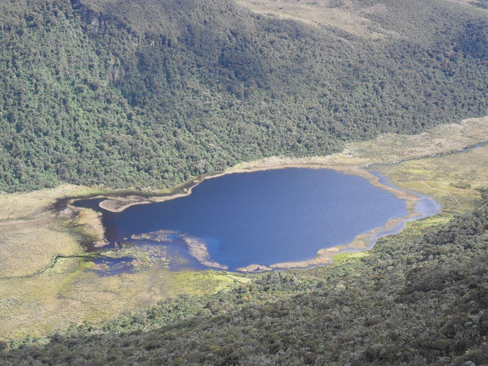

-

Lugares turísticos en Silvia Cauca
CON MISAK TOURS
-
MISAK TOURS
Somos una empresa socialmente responsable prestadora de los mejores servicios turísticos relacionados con la naturaleza y sitios sagrados.
Misak Tours es una empresa socialmente responsable con un equipo laboral competente que ofrece los mejores servicios turísticos, cumpliendo con los más altos estándares de seguridad, orientada a satisfacer las necesidades de los clientes.
Nuestra visión es ser una organización empresarial activa e innovadora comprometidos siempre con la calidad en el servicio.


Si ya eres un aventurero o eres un amante de la naturaleza estas son nuestras recomendaciones para ti. ver
Lo que dicen nuestros clientes
Por que elegir a misak tours
-
Angie Camargo
@angie_co
@misaktours son los mejores, gracias por todo. los invito a vivir una experiencia con MISAK TOURS.
-
Naikder Tombé
@naik_ts
hola los invito a compartir en familia con @misaktours los paisajes y lagunas de guambia.
-
Danna Sánchez
@dannsa
Lo que más me gusta de @misaktours es que te enseñan paisajes y lagunas muy hermosos.